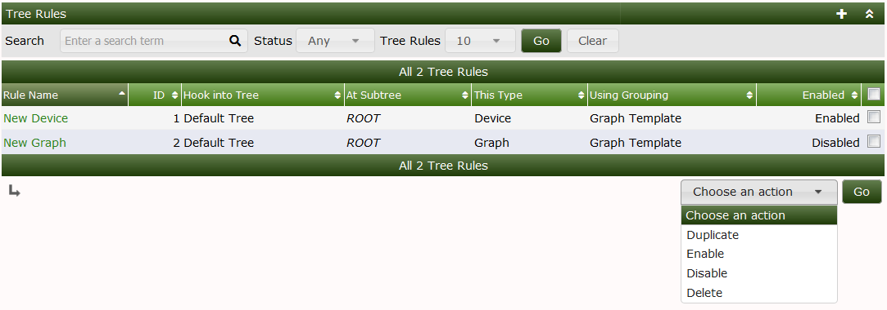
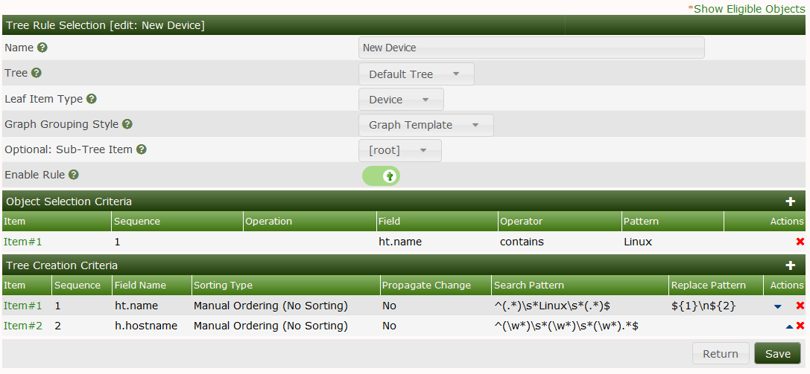
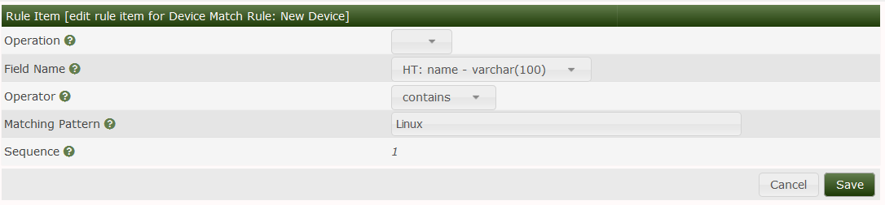
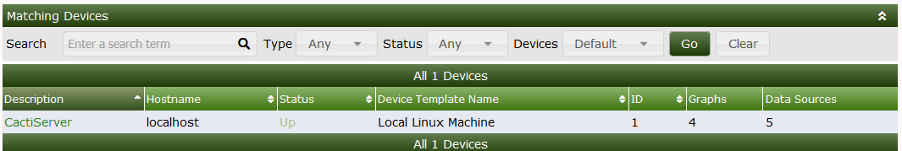
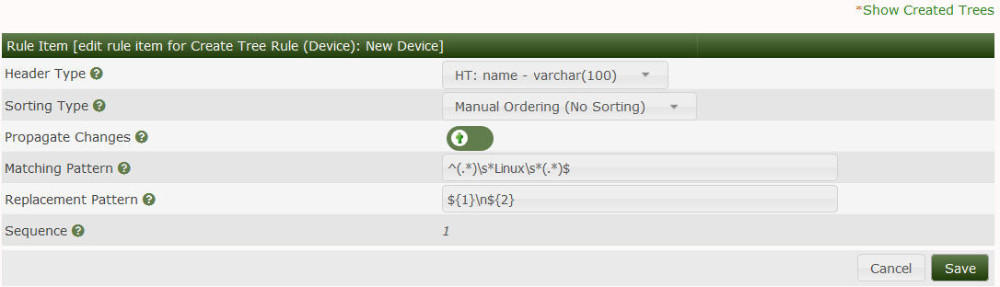

This section will describe Tree Rules in Cacti.
Tree rules allow Automation to bunch up devices based on matches on rules we come up with you can say bunch all Cisco devices on to a Cisco tree. Or if you have a site where all of the hostnames start with siteb you can have a site b tree etc see below for some examples.
To get started you will need to create a Tree rule on the top right click the + to start a new rule you are also able to duplicate rules to make it easier as well.



We need a way to tell automation what device we are looking for in the example above we are looking for a device with the hostname Linux this is done via a REGEX any perl based REGEX can be used.
To test this REGEX on existing devices you can click the show eligible Objects this will check the Devices currently in cacti for a match.

Once a device is a match it will be placed on the default tree. To change which tree the device will be placed on simply select the tree name from the dropdown list.

We also have the option to auto create a tree based on our rule in this case a new tree Named Linux will be created if it does not already exist.
Copyright (c) 2004-2024 The Cacti Group